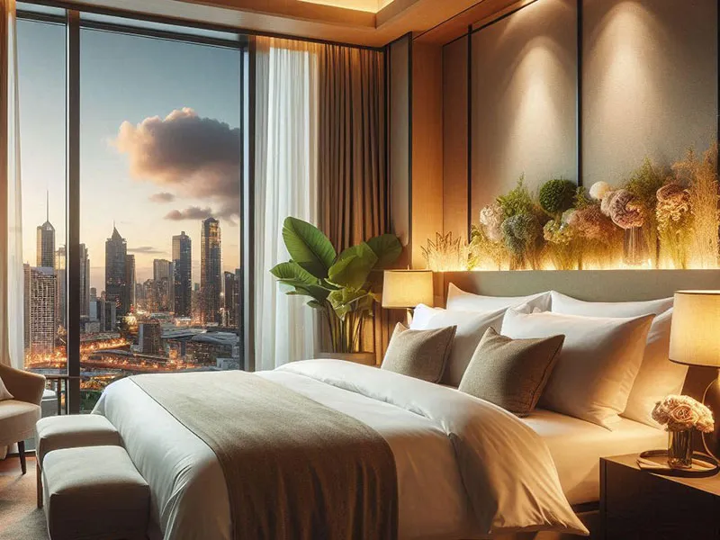

交通部觀光局
交通部觀光局（Tourism Administration, MOTC, Republic of China (Taiwan)）是中華民國交通部下轄的機關，負責全國觀光政策的規劃、推動與執行，其核心目標是促進國內外觀光產業的發展，提升台灣的國際觀光形象與競爭力。
旅遊平安險｜安心出發，有我們在
旅途中，最重要的不是風景，是你自己。 為了讓每一段旅程都更加安心，漫島全行程皆附加旅遊平安保險，保障內容包含： 意外傷害保險 醫療補助保障 緊急事故協助 我們與專業保險單位合作，無論是一日行程還是過夜路線，都為你準備好完整的保護。因為走得遠，也要走得穩。
住宿安排｜好好休息，是旅程的起點
我們相信，一晚舒適的睡眠，才能讓旅行更深刻。 漫島精選合作的在地旅宿，從老屋民宿、文青旅店到自然系小木屋，皆通過品質驗證，並提供以下服務： 舒適衛浴與乾淨寢具 免費 Wi-Fi 與飲水設施 多數旅宿支援素食與過敏備註需求 有些地方，值得你留下來一點時間感受。 而我們的任務，是替你找到那個「剛剛好」的歇腳處。
